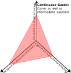

Lecture 4 - Disaggregate Econometric Choice Theory
ENCI707: Engineering Demand and Policy Analysis
Demand Versus Choice
Demand
- Aggregate
- Homogenous people
- Identical behaviour
- Variables: Price (P) and quantity (Q)
- Demand function: Q = f(P)
- Demand = Bundle of choices
Choice
- Disaggregate
- Heterogeneous people
- Random behaviour
- Variables: Attributes of choice alternatives; attributes of choice maker; context of choices
- Non-linear choice function
Transportation Choices
Many travel demand related choices are:
- Discrete: activity type choice, mode choice, route choice, vehicle type choice, time of the day choice, location of trip destination choice etc.
- Continuous: activity duration, vehicle usage, housing duration, etc.
- Heterogeneous: Wide variations of choices across the population.
- Probabilistic/stochastic/random: We can’t defined deterministically.
Choice as Consumption

Choice as Consumption
Disaggregate to Aggregate
- Choice of private vehicle as mode -> # of vehicle trips
- Choice of transit as mode -> # of transit trips
- Choice of shared vehicle as mode -> # of shared vehicle trips
Theory of Choice Behaviour
- Descriptive (or positive): how human beings behave, not how they should/ought to behave
- Abstract: that can be formalized in general cases not specific to particular circumstances
- Operational: can be applied to develop models with variables and parameters that can be observed and estimated. Models can be used for prediction and/or policy evaluation
Framework of Choice Theory
- Choice as outcome of sequential decision-making:
- Definition of the choice problem
- Generation of alternatives
- Evaluation of attributes of alternatives
- Choice making
- Executing the choice
- Define:
- Decision maker
- Characteristics of decision maker
- Alternatives
- Attributes of alternatives
- Decision rules to make choice
Decision Maker
- Disaggregate: Individual or group (household, family, firms, government agency, etc.)
- Heterogeneous choice makers: Wide variety in choice behaviour across the population
- Taste variations across the choice/decision makers: Idiosyncrasy
- Different choice situations for different people
- Characteristics of heterogeneous choice maker: age, gender, income, education, household/firm size, etc.
- Choice situations/context: spatial, temporal, economic
Alternatives
- Choice means choosing an alternative out of a choice set (mutually exclusive and collectively exhaustive countable set of alternatives):
- Universal choice set: \(C\)
- Feasible / Individual-specific: \(C_i\)
- Consideration (awareness) set: \(C_{ci}\)
Example:
\(C\) = { Private car, Ridehail, Taxi, Bus, Bicycle, Walk}
- No driver’s license, distance > 3 km
\(C_i\) = { Ridehail, Taxi, Bus, Bicycle}
- No driver’s license, distance > 3 km & not aware of Ridehail
\(C_{ci}\) = { Taxi, Bus, Bicycle}
Alternatives - Attributes
- Decision maker evaluates alternatives in terms of attribute values: Attribute values can be measured on the scale of attractiveness:
- Categorical: Binary, ordinal (reliability, safety, convenience, etc.)
- Cardinal: absolute values (time, cost, etc.)
- Generic versus alternative-specific
- Measured versus perceived
Decision Rules
- Rational behaviour (homo economicus): self-interested economic actor who optimizes own choice outcomes
- Bounded rationality: Use rules to simplify:
- Dominance: Rules used to remove inferior alternative
- Satisfaction: Attributes of the alternatives need to satisfy the expectation level
- Lexicographic: attributes are rank ordered by their level of importance
- Utility maximizing: maximize a latent function of different attributes of alternatives in the choice set
Utility Maximization
Utility function:
- Captures relative attractiveness of alternative in the choice set
- Measures the satisfaction that the decision maker wants to optimize
Assumptions:
- Decision maker has full knowledge about the attributes of the alternatives and is able to process information
- Base on information processing, decision maker associates a utility to each alternative
- Decision maker has transitive preferences
- Decision maker is rational and perfect optimizer
- Decision maker is consistent
Probability in Utility Maximization
Constant utility:
- Utility is deterministic and cardinal in nature
- Decision maker does not maximize utility
- However, human behaviour is inherently random
Random utility:
- Decision maker is a rational optimizer
- Modeller does not observe the exact measure of utility used by the decision maker
- Utility becomes random and ordinal variable
- Probabilistic choice model because of unobserved heterogeneity (randomness)
Discrete Choice
Two alternatives: transit, car \[𝑈_{ğ‘¡ğ‘Ÿğ‘ğ‘›ğ‘ ğ‘–ğ‘¡}=\beta_𝑡 𝑇𝑖𝑚𝑒_{ğ‘¡ğ‘Ÿğ‘ğ‘›ğ‘ ğ‘–ğ‘¡}+\beta_𝑐 ğ¶ğ‘œğ‘ 𝑡_{ğ‘¡ğ‘Ÿğ‘ğ‘›ğ‘ ğ‘–ğ‘¡} \text{ (Typically, }\beta_t, \beta_c <0)\]
\[𝑈_{𝑐𝑎𝑟}=\beta_𝑡 𝑇𝑖𝑚𝑒_{𝑐𝑎𝑟}+\beta_𝑐 ğ¶ğ‘œğ‘ 𝑡_{𝑐𝑎𝑟}\]
Equivalent specification \[𝑈_{ğ‘¡ğ‘Ÿğ‘ğ‘›ğ‘ ğ‘–ğ‘¡}=(\beta_𝑡/\beta_𝑐)𝑇𝑖𝑚𝑒_{ğ‘¡ğ‘Ÿğ‘ğ‘›ğ‘ ğ‘–ğ‘¡}+ğ¶ğ‘œğ‘ 𝑡_{ğ‘¡ğ‘Ÿğ‘ğ‘›ğ‘ ğ‘–ğ‘¡}\]
\[𝑈_{𝑐𝑎𝑟}=(\beta_𝑡/\beta_𝑐)𝑇𝑖𝑚𝑒_{𝑐𝑎𝑟}+ğ¶ğ‘œğ‘ 𝑡_{𝑐𝑎𝑟}
\]
Choice: car, if \[\beta_𝑡 𝑇𝑖𝑚𝑒_{𝑐𝑎𝑟}+\beta_𝑐 ğ¶ğ‘œğ‘ 𝑡_{𝑐𝑎𝑟} \geq \beta_𝑡 𝑇𝑖𝑚𝑒_{ğ‘¡ğ‘Ÿğ‘ğ‘›ğ‘ ğ‘–ğ‘¡} + \beta_𝑐 ğ¶ğ‘œğ‘ 𝑡_{ğ‘¡ğ‘Ÿğ‘ğ‘›ğ‘ ğ‘–ğ‘¡}
\]
or \[(\beta_𝑡/\beta_𝑐)𝑇𝑖𝑚𝑒_{𝑐𝑎𝑟}+ğ¶ğ‘œğ‘ 𝑡_{𝑐𝑎𝑟} \leq (\beta_𝑡/\beta_𝑐)𝑇𝑖𝑚𝑒_{ğ‘¡ğ‘Ÿğ‘ğ‘›ğ‘ ğ‘–ğ‘¡}+ğ¶ğ‘œğ‘ 𝑡_{ğ‘¡ğ‘Ÿğ‘ğ‘›ğ‘ ğ‘–ğ‘¡}
\]
Discrete Choice
Car is the dominant alternative, if \[𝑇𝑖𝑚𝑒_{𝑐𝑎𝑟} < 𝑇𝑖𝑚𝑒_{ğ‘¡ğ‘Ÿğ‘ğ‘›ğ‘ ğ‘–ğ‘¡} \text{ & } ğ¶ğ‘œğ‘ 𝑡_{𝑐𝑎𝑟} < ğ¶ğ‘œğ‘ 𝑡_{ğ‘¡ğ‘Ÿğ‘ğ‘›ğ‘ ğ‘–ğ‘¡} \therefore 𝑈_{𝑐𝑎𝑟} > 𝑈_{ğ‘¡ğ‘Ÿğ‘ğ‘›ğ‘ ğ‘–ğ‘¡}\]
Car and transit in competition, if \[𝑇𝑖𝑚𝑒_{𝑐𝑎𝑟} < 𝑇𝑖𝑚𝑒_{ğ‘¡ğ‘Ÿğ‘ğ‘›ğ‘ ğ‘–ğ‘¡} \text{ & } ğ¶ğ‘œğ‘ 𝑡_{𝑐𝑎𝑟} > ğ¶ğ‘œğ‘ 𝑡_{ğ‘¡ğ‘Ÿğ‘ğ‘›ğ‘ ğ‘–ğ‘¡}\]
Is the traveler willing to pay extra \((Cost_{car}-Cost_{transit})\) to save \((Time_{transit} -Time_{car})\)?
If yes (pick car): \(\left(\frac{\beta_𝑡}{\beta_𝑐}\right)𝑇𝑖𝑚𝑒_{𝑐𝑎𝑟} + ğ¶ğ‘œğ‘ 𝑡_{𝑐𝑎𝑟} \leq \left(\frac{\beta_𝑡}{\beta_𝑐}\right)𝑇𝑖𝑚𝑒_{ğ‘¡ğ‘Ÿğ‘ğ‘›ğ‘ ğ‘–ğ‘¡} + ğ¶ğ‘œğ‘ 𝑡_{ğ‘¡ğ‘Ÿğ‘ğ‘›ğ‘ ğ‘–ğ‘¡}\)
Willingness-to-pay or Value of Travel Time Savings (VOTS): \[\left(\frac{\beta_𝑡}{\beta_𝑐}\right) \geq \frac{(ğ¶ğ‘œğ‘ 𝑡_{𝑐𝑎𝑟}−ğ¶ğ‘œğ‘ 𝑡_{ğ‘¡ğ‘Ÿğ‘ğ‘›ğ‘ ğ‘–ğ‘¡})}{(𝑇𝑖𝑚𝑒_{ğ‘¡ğ‘Ÿğ‘ğ‘›ğ‘ ğ‘–ğ‘¡}−𝑇𝑖𝑚𝑒_{𝑐𝑎𝑟})}\]
Stochastic Discrete Choice
Choice Probability of an alternative \(j\) for an individual \(i\) with choice set \(C_i\) \[Pr⁡( 𝑗|𝐶_𝑖)=Pr⁡( 𝑈_{𝑖𝑗} \geq 𝑈_{ğ‘–ğ‘˜}) \text{, } 𑘠\neq 𝑗 \text{ & } 𑘠\in 𝐶_𝑖\]
Random utility: \[𝑈_{𝑖𝑗}=𝑉_{𝑖𝑗}+\epsilon_{𝑖𝑗} \text{, } 𝑗 \in 𝐶_𝑖\]
Random Utility Maximizing (RUM) Choice Model: \[Pr⁡( 𝑗|𝐶_𝑖)=Pr⁡( 𝑉_{𝑖𝑗} + \epsilon_{𝑖𝑗} \ge 𝑉_{ğ‘–ğ‘˜} + \epsilon_{ğ‘–ğ‘˜}) \text{, } 𑘠\neq 𝑗 \text{ & } 𑘠\in 𝐶_𝑖\] Or \[Pr⁡( 𝑗|𝐶_𝑖)=Pr⁡( \epsilon_{ik} - \epsilon_{ij} \leq V_{ij} - V_{ik}) \text{, } 𑘠\neq 𝑗 \text{ & } 𑘠\in 𝐶_𝑖\]
RUM-Based Discrete Choice
- Fully specified choice set \(C_i\)
- Attributes of alternatives are completely defined
- Only differences in utility matter
- Systematic utility function is specified as a function of attributes
- An attribute may have the same (generic) weighting factors (coefficient) for all alternatives if it varies across the alternatives (e.g., travel time, travel cost, etc.).
- An attribute may have different weighting factors (coefficient) for different alternatives if it does not vary across the alternatives (age, gender, income, etc.).
- Assumption on distribution of random utility is necessary to derive choice probability: Stochastic Choice Model
Binary Discrete Choice
Choice Probability of an alternative \(j\) for an individual \(i\) with choice set \(C_i\) of two alternatives: \(j, k\) (dropping \(i\) for sake of simplicity) \[Pr⁡( 𝑗|𝐶_𝑖)=Pr⁡( 𝑉_𝑗+\epsilon_𝑗 \ge 𝑉_𝑘+\epsilon_𝑘)\] \[Pr⁡( 𝑗|𝐶_𝑖)=Pr⁡( \epsilon_𝑘−\epsilon_𝑗≤𝑉_𝑗−𝑉_𝑘)\] Binary Probit:
- \(\epsilon_j,\epsilon_k\) are both normally distributed
- So,(\(\epsilon_k-\epsilon_j\)) is also normally distributed
- With fully specified alternative specific constants, (\(\epsilon_k-\epsilon_j\)) is \(N(0,\sigma^2)\): \[V-j - V_k = \beta_0 + \sum \beta(x_j - x_k)\]
- Resulting Choice model: \(Pr(j) = \Phi(V/\sigma)\)
- \(\sigma\) normalized to 1, giving probit model with unit variance
Binary Discrete Choice
Binary Logit:
\(\epsilon_j,\epsilon_k\) are IID Type I EV distributed with scale \(\mu\) and variance \(\pi^2/6\mu^2\)
With fully specified alternative specific constants, (\(\epsilon_k-\epsilon_j\)) is logistically distributed with scale \(\mu\) and variance \(\pi^2/3\mu^2\): \[V_j - V_k = V = \beta_0 + \sum \beta (x_j - x_k)\] Resulting Choice model: \[Pr(j) = \frac{1}{1+\exp(-\mu(V_j - V_k))} = \frac{\exp(\mu V_j)}{\exp(\mu V_j)+\exp(\mu V_k)}\]
\(\mu\) normalized to 1, giving logit model with variance of \(\pi^2/3\)
Binary Discrete Choice
Binary Probit/Logit Identification
- Only one alternative specific constant
- Scale of logit model is not identified as a constant
- Reference alternative is irrelevant \[𝑉_𝑗−𝑉_𝑘=𝑉=\beta_0+\sum \beta(ğ‘¥_ğ‘—−ğ‘¥_𝑘)\] \[𝑉_𝑗=\beta_0+\beta(ğ‘¥_{ğ‘”ğ‘’ğ‘›ğ‘’ğ‘Ÿğ‘–ğ‘})_𝑗+\beta_{(ğ‘—−ğ‘ ğ‘ğ‘’ğ‘ğ‘–ğ‘“ğ‘–ğ‘)} ğ‘¥_{(ğ‘—−ğ‘ ğ‘ğ‘’ğ‘ğ‘–ğ‘“ğ‘–ğ‘)}\] \[𝑉_𝑘=0+\beta(ğ‘¥_{ğ‘”ğ‘’ğ‘›ğ‘’ğ‘Ÿğ‘–ğ‘})_𑘠+ \beta_{(ğ‘˜âˆ’ğ‘ ğ‘ğ‘’ğ‘ğ‘–ğ‘“ğ‘–ğ‘)} ğ‘¥_{(ğ‘˜âˆ’ğ‘ ğ‘ğ‘’ğ‘ğ‘–ğ‘“ğ‘–ğ‘)}\] \[𝑉_{𝑐𝑎𝑟}=\beta_0+\beta_𝑡 time_{𝑐𝑎𝑟} + \beta_𝑐 cost_{𝑐𝑎𝑟} +\beta_𑜠CarOwnership \] \[𝑉_{ğ‘¡ğ‘Ÿğ‘ğ‘›ğ‘ ğ‘–ğ‘¡} = 0 + \beta_𝑡 time_{ğ‘¡ğ‘Ÿğ‘ğ‘›ğ‘ ğ‘–ğ‘¡} + \beta_𝑐 fare_{ğ‘¡ğ‘Ÿğ‘ğ‘›ğ‘ ğ‘–ğ‘¡} + \beta_ğ‘Ÿ On−TimePerformance\]
- Allows non-linear transformation and normalizations